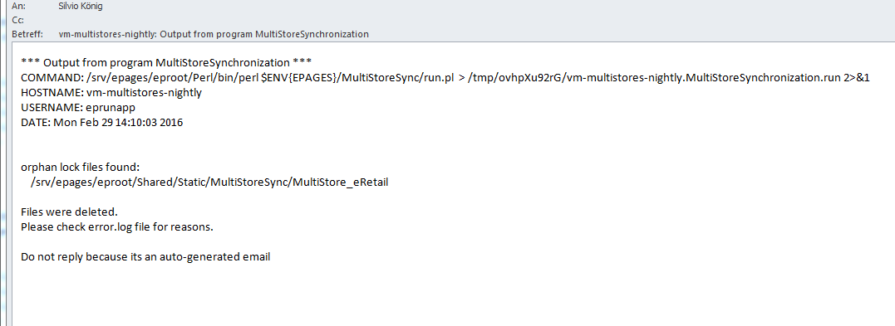

Agenda
- MS 1.0: Cleanup Script
- Integrate Connector Cartridge in Standard
- Product Types GET
- Synch Service: Refactoring
- Synch Service: Data Model Documentation
MUL-209:
MS 1.0: Cleanup Script
- clean up orphan lock files from parallel synchronization

MUL-220:
Integrate Connector Cartridge in Standard
- Contains REST Resources for MS 2.0 MVP
- Will be integrated in 6.17.43
- Integration tests for synchronization
MUL-111:
Product Types: GET
MUL-212:
Synch Service: Refactoring
- Improve performance
- Reuse code & better readability
- Products & Product types
MUL-214:
Synch Service: Data Model Documentation